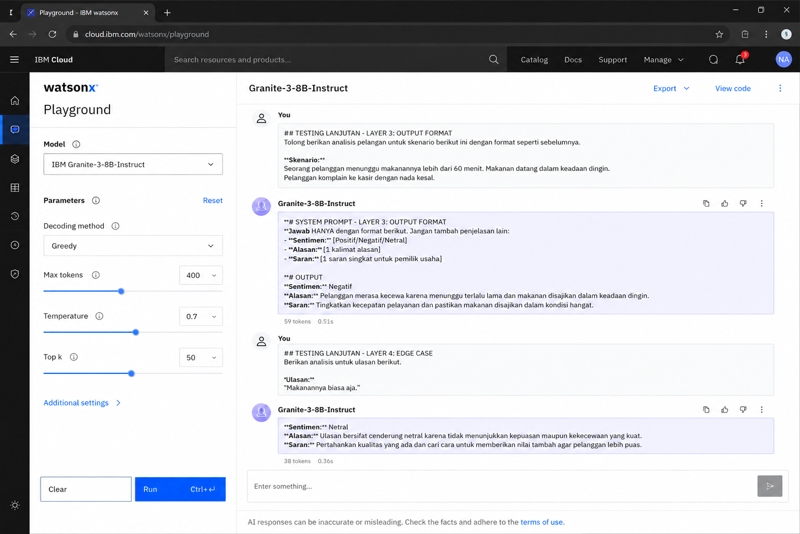

Customer Feedback Sentiment Analyzer
AI Agent berbasis IBM watsonx untuk UMKM Indonesia
Deskripsi
Customer Feedback Sentiment Analyzer adalah AI Agent berbasis IBM watsonx (IBM Bob) yang membantu pemilik UMKM menganalisis sentimen pelanggan secara otomatis.
AI Agent menerima teks feedback pelanggan kemudian mengklasifikasikan sentimen ke dalam kategori Positif, Negatif, atau Netral serta memberikan alasan dan saran singkat yang dapat langsung digunakan untuk meningkatkan kualitas layanan.
Tujuan Project
Membantu pemilik UMKM memahami opini pelanggan dari berbagai platform seperti:
- Google Review
- Shopee
- Tokopedia
- WhatsApp Business
secara cepat tanpa harus membaca komentar satu per satu.
Problem Statement
UMKM saat ini menghadapi banyak feedback pelanggan yang tersebar di berbagai platform digital. Membaca dan mengelompokkan komentar secara manual membutuhkan waktu yang lama dan berisiko melewatkan keluhan penting.
Akibatnya:
- Keluhan pelanggan terlambat ditangani
- Kualitas layanan sulit dievaluasi
- Reputasi bisnis dapat menurun
- Peluang perbaikan layanan terlewatkan
Target Users
Fitur Utama
- Analisis sentimen pelanggan
- Klasifikasi Positif
- Klasifikasi Negatif
- Klasifikasi Netral
- Alasan singkat hasil analisis
- Saran tindakan untuk pemilik usaha
Tools
- IBM watsonx Playground (IBM Bob)
- Granite-3-8B-Instruct
- GitHub
Prompt Layering
Layer 1 - Role
Kamu adalah AI Analis Sentimen untuk UMKM Indonesia. Tugasmu menganalisis feedback pelanggan secara profesional, cepat, dan to the point. Gunakan Bahasa Indonesia yang sopan dan mudah dipahami.
Layer 2 - Task
Analisis teks feedback pelanggan di bawah ini. Klasifikasikan sentimen menjadi: - Positif - Negatif - Netral Berikan alasan singkat berdasarkan isi feedback.
Layer 3 - Output Format
Sentimen: [Positif/Negatif/Netral] Alasan: [1 kalimat alasan] Saran: [1 saran singkat]
Screenshot Prompt IBM Bob

Screenshot Hasil Pengujian

Hasil Pengujian
Input:
Makanannya enak dan harganya terjangkau, pelayanannya juga ramah banget. Pasti balik lagi!
Output:
Alasan:
Pelanggan merasa puas karena makanan enak,
harga terjangkau, dan pelayanan ramah.
Saran:
Pertahankan kualitas rasa, harga, dan pelayanan
agar pelanggan tetap loyal.
Pengujian Tambahan
Testing Sentimen Negatif dan Netral

📷 screenshots/testing_lanjutan.pngLetakkan file gambar di folder screenshots/